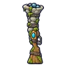

โกเลมก้อนกรวด · ร่างกรวดชมพู
มอนธาตุดิน Lv 22–28
เจอที่
| แมพ | โซน | Lv | ภูมิภาค |
|---|---|---|---|
| ถ้ำตาน้ำ | 22–28 | ป่ากองไฟ |
ค่าสถานะตามเลเวล
| Lv | HP | ATK | DEF | MDEF | EXP | Job |
|---|---|---|---|---|---|---|
| 22 | 4,378 | 46–70 | 10 | 5 | 67 | 50 |
| 25 | 4,380 | 50–75 | 11 | 5 | 74 | 56 |
| 28 | 5,237 | 56–82 | 12 | 6 | 81 | 61 |
ตีด้วยธาตุไหนดี
แรงขึ้น: ไฟ ×1.5 พิษ ×1.25
เบาลง: ลม ×0.5 ดิน ×0.25
วัตถุดิบที่ดรอป
| ของ | โอกาส | |
|---|---|---|
| กรวดตาน้ำ | 82% | 1 ชิ้น (15% ได้ 2) |
อุปกรณ์ที่ดรอป (1)
| ของ | โอกาส |
|---|---|
 ลูกซองกรวดตาน้ำ | 0.24% |
สกิล
ร่างแข็ง (Lv 25+) · ร่างแข็ง (Lv 60+) · ทุบพื้น (Lv 60+)